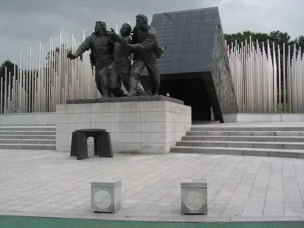

민주화운동 관련자를 국가유공자에 준해 예우하는 '민주유공자 예우에 관한 법률안'(민주유공자법)이 20일 국회 본회의를 통과했다. 법안은 재석 의원 178명 전원의 찬성으로 가결됐다. 국민의힘은 여당의 일방 처리에 반발하며 표결에 참여하지 않았다. 2000년 처음 발의된 뒤 26년 만에 본회의 문턱을 넘어선 것이다. 법안은 정부 이송과 공포 절차를 거쳐 시행 준비에 들어가게 된다.
이날 표결에 앞서 국민의힘은 전날 오후부터 무제한 토론(필리버스터)을 이어가며 법안 처리에 반대했다. 더불어민주당과 조국혁신당 등 범여권은 필리버스터가 시작된 지 24시간이 지나자 표결로 토론을 종결시킨 뒤 법안을 상정해 처리했다. 이 법안은 당초 이달 초 본회의에서 처리될 것으로 예상됐지만, 다른 법안을 둘러싼 여야 대치로 상정이 미뤄진 바 있다. 필리버스터는 소수 정당이 법안 처리를 늦출 수 있는 합법적 수단이지만, 재적 의원 5분의 3 이상이 찬성하면 종결할 수 있다.
법안은 1964년 3월 24일 이후 민주화운동에 참여해 희생되거나 공헌한 당사자와 그 유가족을 예우하는 것을 골자로 한다. 국가보훈부가 심사를 거쳐 대상자로 인정하면 의료·양로 지원 등 보훈 혜택을 받을 수 있게 된다. 1987년 민주화운동 과정에서 숨진 박종철·이한열 열사도 유공자로 예우받게 된다. 보훈부는 앞서 적용 대상 규모를 600명대로 설명한 바 있다. 구체적인 지원 범위와 방식은 앞으로 마련될 하위 법령에서 정해질 예정이다.
적용 대상에서 제외되는 기준도 법에 담겼다. 국가보안법 위반으로 금고 이상의 실형을 선고받은 사람과 형법상 내란, 살인, 성폭력 범죄 등을 저지른 사람은 유공자로 인정받을 수 없다. 이미 별도 법률로 예우를 받고 있는 4·19혁명과 5·18민주화운동 관련자와는 구분해, 그동안 제도 밖에 있던 민주화운동 희생자를 포괄하려는 취지라는 것이 법안을 추진한 측의 설명이다.
이 법안이 본회의를 통과한 것은 이번이 처음은 아니다. 2024년 5월에도 국회 본회의를 통과했지만, 당시 윤석열 전 대통령이 재의요구권(거부권)을 행사하면서 최종적으로 폐기됐다. 이후 22대 국회에서 다시 발의돼 상임위원회 논의를 거쳤고, 약 2년 만에 다시 본회의에 올라 가결됐다. 법안을 둘러싼 찬반 논쟁이 사반세기 넘게 이어져 온 셈이다. 거부권 행사로 폐기됐던 법안이 다시 국회를 통과한 사례로도 기록되게 됐다.

국민의힘은 그동안 유공자 인정 대상과 심사 기준이 불명확하다며 이 법을 '운동권 특혜법'이라고 비판해 왔다. 국회 전문위원 검토 과정에서도 법률상 명확한 심사 기준이 부족하다는 지적이 나온 바 있다. 반면 여권은 민주화에 헌신한 이들에 대한 국가의 정당한 예우가 너무 오래 미뤄졌다며 처리의 당위성을 강조했다. 여야의 시각 차가 큰 만큼 법 시행 이후에도 대상자 선정을 둘러싼 논쟁이 이어질 가능성이 있다.
법안 통과 이후 권오을 국가보훈부 장관은 야당의 지적을 적극 보완하겠다며 하위 법령을 조속히 마련해 엄정한 심사가 이뤄지도록 하겠다는 입장을 밝혔다. 앞으로 시행령 등 세부 규정에 담길 구체적인 심사 기준과 절차가 법 시행 과정에서 공정성 논란을 줄일 수 있을지가 관건으로 꼽힌다.